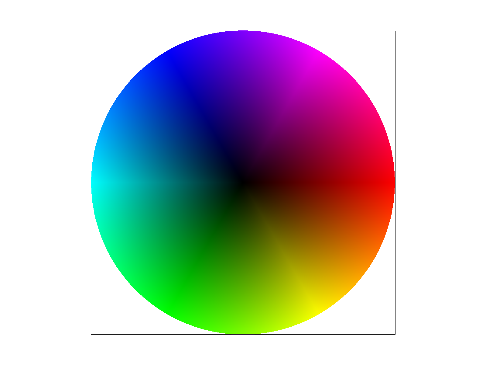

CS184 Summer 2025 Homework 1 Write-Up
Link to webpage: (TODO) Link to webpage
Link to GitHub repository: (TODO) Link to Github repository
Overview
Give a high-level overview of what you implemented in this homework. Think about what you've built as a whole. Share your thoughts on what interesting things you've learned from completing the homework.Task 1: Drawing Single-Color Triangles
(1) How to rasterize?
- Given the coordinates of the three vertices of the triangle as input.
- Get the bounding box of the triangle by getting the minimum and maximum x, y coordinates of the three vertices.
- For each pixel within the bounding box, decide whether their centers are within or on the edge of the triangle by using the inside() function.
The inside function:
- Bool. Decide whether a target pixel center is within the triangle
- Given coordinates of the three vertices of the triangle, we fix one of them,
then calculate the cross product of each edge and the line between the fixed vertex and the target pixel center.
- Return true if the target point is on the same side of each edge of the triangle (i.e. the three cross products are of the same sign).
(2) Explain how your algorithm is no worse than one that checks each sample within the bounding box of the triangle.
- We check every pixel center within the bounding box once, by using the point-in-triangle test (i.e. the inside() functions).
Then fill the pixel with color only if the pixel is within or on the edge of the triangle.
- No pixel center outside the bounding box is checked so that I save time and computation.

Task 2: Antialiasing by Supersampling
Supersampling algorithm:
- Divide each pixel into a grid of subpixels
- Rasterization: loop through the subpixels and compute their center’s location; then check whether they lie inside the triangle using the 'inside' function; then store the color values of the pixels that are inside the triangle in the 'sample_buffer'
- Resolve to framebuffer: after all the primitives are rasterized into the sample buffer, use
resolve_to_framebuffer()to compute the final pixel color. For each pixel, average its subpixel values and write the result into the final framebuffer ('rgb_framebuffer_target').
Data Structures used:
- std::vector<Color>:
sample_buffer()stores supersampled color values for all pixels
size: width * height * sample_rate - unsigned char:
rgb_framebuffer_target()is the final framebuffer to be displayed on screen
Modifications:
Originally, we only stored the color values of each pixel center in the sample_buffer. Now, we resize sample_buffer to store all color values of all pixels, including subpixels.set_sample_rate()&set_framebuffer_target():
Originally, we only stored the color values of each pixel center in the sample_buffer. Now, we resize sample_buffer to store all color values of all pixels, including subpixels.rasterize_triangle():
After we resized the sample_buffer to contain color values of all pixels, we averaged the color values of each sample_rate times sample_rate grid. The, the results are written into reb_gramebuffer_target, which is ultimately displayed.resolve_to_framebuffer():
Since lines and points are not supersampled, we modified this function to write the same color to all sub-pixels within a pixel when drawing lines and points.fill_pixel():
Why the results above are observed?
-> How does supersampling antialias our triangles? Why is supersampling useful?
Supersampling means that we sample each pixel multiple times instead of only once as we did without supersampling.
We also average the results of sub-pixels within the pixel grid.
As a result, the pixel’s color does not only depend on its center or any single point within it,
Instead, it depends on several samples, which softens the harsh transition between filled and empty pixels, producing smoother triangle edges without jaggedness.
For example, the final color of a pixel partially covered by the triangle is an average between triangle color and the background,
and is neither the triangle color nor the background color anymore.
This explains the results, where there seems to be more 'blurred' pixels as the sample rate increases.
Task 3: Transforms
Idea: a dancing Christmas tree
Modifications:
- Head
- Deleted a polygon
- Color: changed the original red to Christmas red
#C8102Eby adjusting the code forfill - Adjusted the three vertices of the triangle by modifying the
pointsattribute
- Right hand
- Rotated the two polygons together by 45 degrees counterclockwise
- Color: changed the original red to Christmas green
#007A33by adjusting the code forfill
- Right leg
- Rotated the two polygons together by 45 degrees clockwise
- Rotated the lower polygon by 90 degrees counterclockwise
- Color: changed the original red to brown
#8B4513by adjusting the code forfill
- Torso
- Adjusted two vertices by modifying the
pointsso that the torso looks like a tree trunk - Color: changed the original red to Christmas green
#007A33by adjusting the code forfill
- Adjusted two vertices by modifying the
- Left leg
- Color: changed the original red to brown
#8B4513by adjusting the code forfill
- Color: changed the original red to brown
- Left hand
- Color: changed the original red to Christmas green
#007A33by adjusting the code forfill
- Color: changed the original red to Christmas green
Task 4: Barycentric coordinates
Barycentric Coordinates
Barycentric coordinates are a way to represent any point inside a triangle as a weighted average of the color values of its three vertices. If we have a triangle with vertices A, B, and C, and an arbitrary point P inside it, then P can be written as:
P = αA + βB + γC
Where:
- α + β + γ = 1
- α, β, γ ≥ 0 if P is inside the triangle
Each of the weights α, β, γ describes how "close" the point is to one of the triangle’s corners. For example, if α is close to 1, the point P is close to vertex A.
In the image below (from Google), we have a triangle with three vertices A, B, and C. Each vertex has weights (like 1kg bags) "attached" to it, simulating gravitational pull. These weights represent the influence each vertex has over an arbitrary point P.
Below is our rendered test7.svg with sample rate set to 1: